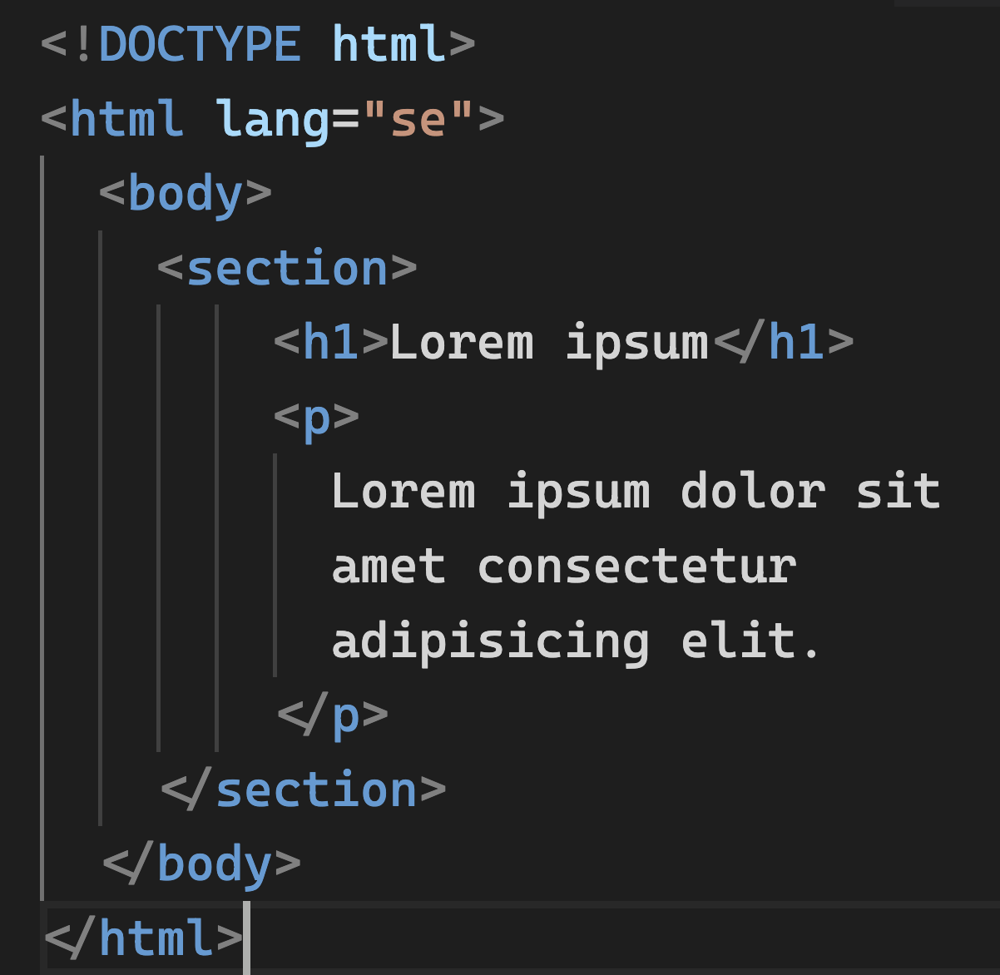
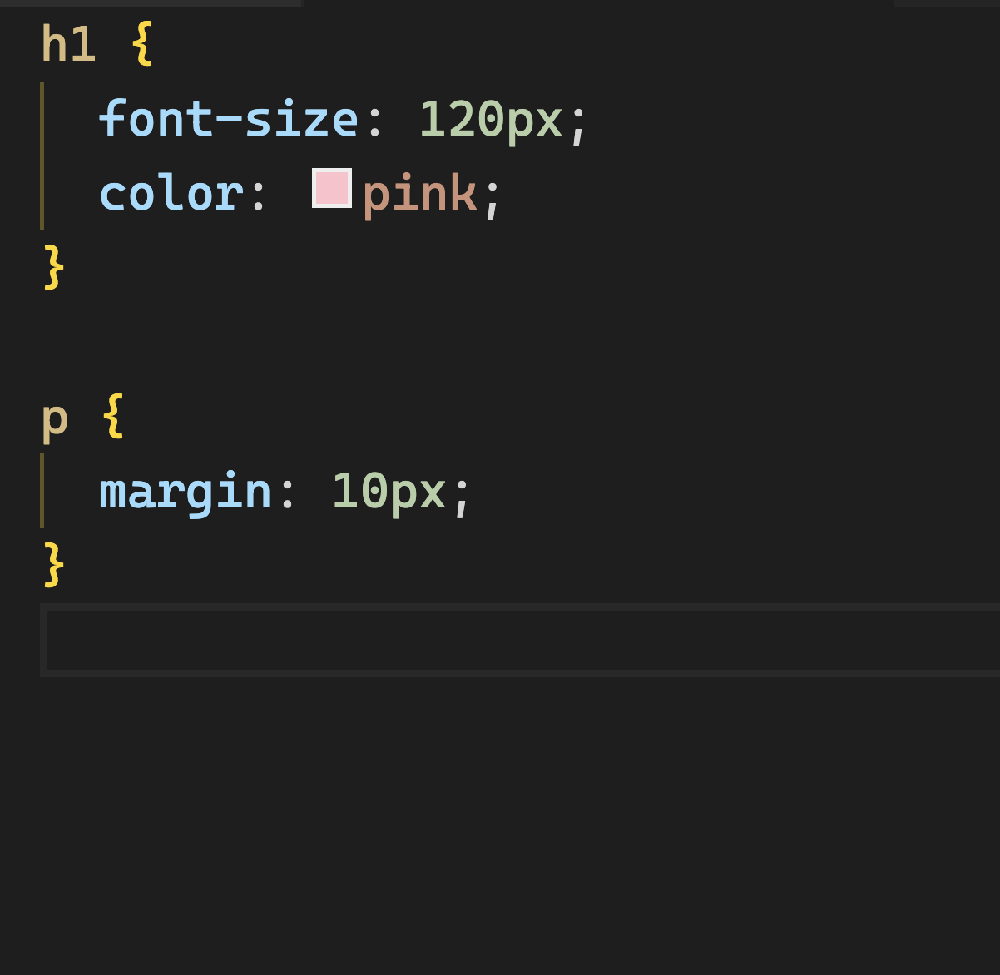
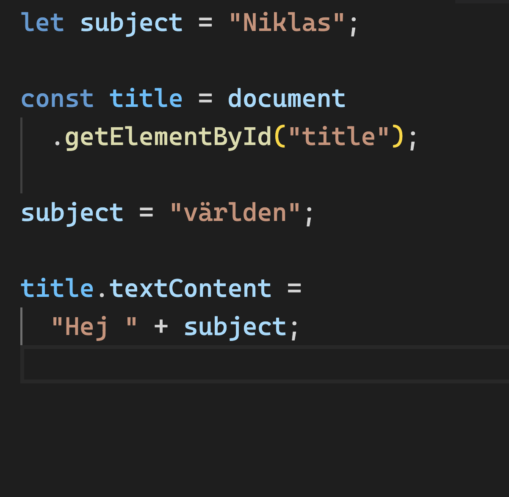
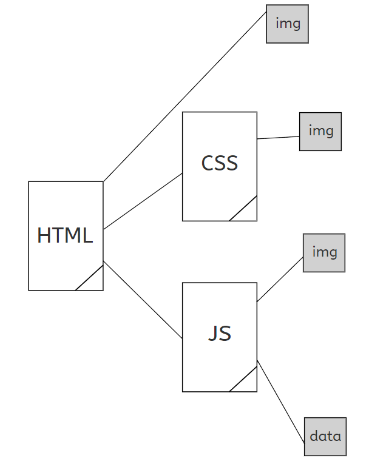

Webbutveckling
på klientsidan
Dagens agenda
- Presentation av kursen
- Vad är en webbsida, egentligen?
Kursinnehåll
- Kärnteknologier inom webbutveckling
- Lite smått om programmering i allmänhet.
-
Ordentligt om programmeringsspråket javascript i synnerhet.
- Webbläsaren och dess APIer
- Klient-server kommunikation
- Verktyg för en god utvecklarupplevelse
- Verktyg för en god användarupplevelse
Vad är en webbsida,
egentligen?
HTML
- Märkspråk
- Första versionen kom i början av 1990-talet
- Bärare av struktur och innehåll

CSS
- Stilmallar
- Enkelt språk, men många parametrar.
- Första specifikationen kom i mitten av 1990-talet
- Beskriver sådant som färg, form och layout

Javascript
- Fullvärdigt programmeringsspråk
- Första versionen kom 1995.
- Ger möjlighet till interaktivitet, reaktivitet, funktionalitet etc

Inläsning av en webbsida:

Länk till presentationen: